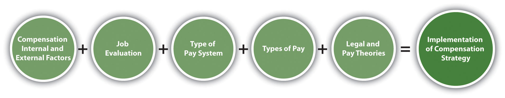

Once you have determined your compensation strategy based on internal and external factors, you will need to evaluate jobs, develop a pay system, and consider pay theories when making decisions. Next, you will determine the mix of pay you will use, taking into consideration legal implications.
Figure 6.2 The Process for Implementing Compensation Strategy
As mentioned when we discussed internal and external factors, the value of the job is a major factor when determining pay. There are several ways to determine the value of a job through job evaluation. Job evaluationThe process of determining the relative worth of jobs to determine pay structure. is defined as the process of determining the relative worth of jobs to determine pay structure. Job evaluation can help us determine if pay is equitable and fair among our employees. There are several ways to perform a job evaluation. One of the simplest methods, used by smaller companies or within individual departments, is a job ranking system. In this type of evaluation, job titles are listed and ranked in order of importance to the organization. A paired comparisonIndividual jobs are compared with every other job, based on a ranking system, and an overall score is given for each job, determining the highest valued job for pay decisions. can also occur, in which individual jobs are compared with every other job, based on a ranking system, and an overall score is given for each job, determining the highest-valued job to the lowest-valued job. For example, in Table 6.1 "Example of a Paired Comparison for a Job Evaluation", four jobs are compared based on a ranking of 0, 1, or 2. Zero indicates the job is less important than the one being compared, 1 means the job is about the same, and 2 means the job is more important. When the scores are added up, it is a quick way to see which jobs are of more importance to the organization. Of course, any person creating these rankings should be familiar with the duties of all the jobs. While this method may provide reasonably good results because of its simplicity, it doesn’t compare differences between jobs, which may have received the same rank of importance.
Table 6.1 Example of a Paired Comparison for a Job Evaluation
| Job | Receptionist | Project Manager | Account Manager | Sales | Director |
|---|---|---|---|---|---|
| Receptionist | X | 0 | 0 | 0 | 0 = 4th |
| Project Administrative Assistant | 1 | X | 0 | 0 | 1 = 3rd |
| Account Manager | 2 | 1 | X | 0 | 3 = 2nd |
| Sales Director | 2 | 2 | 2 | X | 6 = 1st |
| Based on the paired ranking system, the sales director should have a higher salary than the project administrative assistant, because the ranking for that job is higher. Likewise, a receptionist should be paid less than the project administrative assistant because this job ranks lower. | |||||
In a job classification systemA job evaluation system in which every job is classified and grouped based on the knowledge and skills required for the job, years of experience, and amount of authority for a particular job., every job is classified and grouped based on the knowledge and skills required for the job, years of experience, and amount of authority for that job. The US military is perhaps the best known for this type of classification system. The navy, for example, has job classification codes, such as HM (hospitalman). Then the jobs are divided into specialties, such as HM-8483, the classification for surgical technologist, and HM-8451 for a hospitalman-X-ray technician. The federal government and most state governments use this type of system. Tied to each job are the basic function, characteristics, and typical work of that job classification, along with pay range data. A sample of a job classification system is shown in Table 6.2 "Example of a Job Classification System at the University of Washington".
Table 6.2 Example of a Job Classification System at the University of Washington
| Job Code | Job Title | State Job Class Code Reference | Representative Group | Pay Table | Pay Range | Minimum Mo. Rate | Maximum Mo. Incremental Rate | OT Eligible |
|---|---|---|---|---|---|---|---|---|
| 7715 | ACCELERATOR TECHNICIAN 1 | SEIU Local 925 Clerical Nonsupervisory | B4 | 40 | $2689 | $3583 | Y | |
| 7300 | ACCOUNTANT 1 | SEIU Local 925 Clerical Nonsupervisory | B4 | 40 | $2689 | $3583 | Y | |
| 7301 | ACCOUNTANT 2 | SEIU Local 925 Clerical Nonsupervisory | B4 | 44 | $2949 | $3956 | N | |
| 7302 | ACCOUNTANT, SENIOR | SEIU Local 925 Clerical Nonsupervisory | B4 | 50 | $3410 | $4587 | N | |
| 7011 | ACCOUNTING SUPERVISOR | SEIU Local 925 Clerical Supervisory | B4 | 50 | $3410 | $4587 | N | |
| 7045 | ADMINISTRATIVE ASSISTANT A | SEIU Local 925 Clerical Nonsupervisory | B4 | 39 | $2623 | $3493 | Y | |
| 7044 | ADMINISTRATIVE ASSISTANT A-SUPV | SEIU Local 925 Clerical Supervisory | B4 | 41 | $2751 | $3667 | Y | |
| 7046 | ADMINISTRATIVE ASSISTANT B | SEIU Local 925 Clerical Supervisory | B4 | 42 | $2816 | $3763 | Y | |
| 7080 | ADMINISTRATIVE COORDINATOR | SEIU Local 925 Clerical Nonsupervisory | B4 | 37 | $2506 | $3325 | Y | |
| 7490 | ADMISSIONS SPECIALIST | SEIU Local 925 Clerical Nonsupervisory | B4 | 41 | $2751 | $3667 | Y | |
| 7583 | AFFIRMATIVE ACTION/HUMAN RIGHTS ASST | SEIU Local 925 Clerical Nonsupervisory | B4 | 41 | $2751 | $3667 | Y | |
| 8696 | ALCOHOLISM THERAPIST 1 | WFSE HMC | B0 | 56 | $3507 | $5021 | Y | |
| 6119 | ALCOHOLISM THERAPIST 2 | 359F | Classified Non-Union | C0 | 63 | $3761 | $5224 | Y |
| 6329 | ANATOMIC PATHOLOGY LABORATORY LEAD | 315H | Classified Non-Union | C0 | 73 | $4154 | $5771 | Y |
| 6328 | ANATOMIC PATHOLOGY LABORATORY SUPERVISOR | 315I | Classified Non-Union | C0 | 79 | $4412 | $6126 | N |
| 8146 | ANATOMIC PATHOLOGY TECHNICIAN | SEIU Local 925-HMC Technical | B7 | 55 | $3472 | $4822 | Y | |
| 8326 | ANATOMIC PATHOLOGY TECHNICIAN | SEIU LOCAL 925 Medical/Laboratory Tech | B7 | 55 | $3472 | $4822 | Y | |
| 8145 | ANATOMIC PATHOLOGY TECHNICIAN TRAINEE | SEIU Local 925-HMC Technical | B7 | 40 | $2991 | $4155 | Y | |
| 8325 | ANATOMIC PATHOLOGY TECHNICIAN TRAINEE | SEIU LOCAL 925 Medical/Laboratory Tech | B7 | 40 | $2991 | $4155 | Y | |
| 8147 | ANATOMIC PATHOLOGY TECHNOLOGIST | SEIU Local 925-HMC Technical | B7 | 66 | $3874 | $5383 | Y | |
| 8327 | ANATOMIC PATHOLOGY TECHNOLOGIST | SEIU LOCAL 925 Medical/Laboratory Tech | B7 | 66 | $3874 | $5383 | Y | |
| 6313 | ANESTHESIOLOGY TECHNICAL SERVICES SUPV | 320H | Classified Non-Union | CA | 61 | $3686 | $5277 | N |
| 6310 | ANESTHESIOLOGY TECHNICIAN 1 | 320E | Classified Non-Union | CA | 13 | $2287 | $3271 | Y |
| 8711 | ANESTHESIOLOGY TECHNICIAN 1 | WFSE HMC | BA | 10 | $2219 | $3271 | Y | |
| 8312 | ANESTHESIOLOGY TECHNICIAN 2 | SEIU LOCAL 925 Medical/Laboratory Tech | BS | 46 | $3344 | $4933 | Y | |
| 8960 | ANESTHESIOLOGY TECHNICIAN 2 | 1199NW-HMC Respiratory/Anesthesiology | BS | 46 | $3344 | $4933 | Y | |
| 6311 | ANESTHESIOLOGY TECHNICIAN LEAD | 320G | Classified Non-Union | CA | 52 | $3370 | $4826 | Y |
| 8959 | ANESTHESIOLOGY TECHNICIAN LEAD | 1199NW-HMC Respiratory/Anesthesiology | BS | 53 | $3585 | $5288 | Y | |
| 7724 | ANIMAL TECHNICIAN 1 | SEIU Local 925 Clerical Nonsupervisory | B4 | 25 | $1903 | $2506 | Y | |
| 7725 | ANIMAL TECHNICIAN 2 | SEIU Local 925 Clerical Nonsupervisory | B4 | 26 | $1948 | $2567 | Y | |
| 7726 | ANIMAL TECHNICIAN 3 | SEIU Local 925 Clerical Nonsupervisory | B4 | 30 | $2134 | $2816 | Y | |
| 4727 | ANIMAL TECHNICIAN SUPERVISOR | 525H | Classified Non-Union | C1 | 35 | $2370 | $3063 | Y |
| 4658 | ASSISTANT FACILITIES DESIGNER | 540L | Classified Non-Union | C1 | 48 | $3213 | $4214 | Y |
| 8874 | ASSISTANT STEAM ENGINEER | WFSE Skilled Trades | BL | 46G | $3566 | $4106 | Y | |
| 8507 | BAKER | WFSE Campuswide | BI | 30 | $2113 | $2789 | Y | |
| 8508 | BAKER LEAD | WFSE Campuswide | BI | 33 | $2266 | $2994 | Y | |
| 4700 | BIOMEDICAL ELECTRONICS TECHNICIAN 1 | 511E | Classified Non-Union | CA | 54 | $3438 | $4924 | Y |
| 4701 | BIOMEDICAL ELECTRONICS TECHNICIAN 2 | 511F | Classified Non-Union | CA | 68 | $3954 | $5659 | Y |
| 4702 | BIOMEDICAL ELECTRONICS TECHNICIAN 3 | 511G | Classified Non-Union | CA | 78 | $4368 | $6249 | Y |
| 4703 | BIOMEDICAL ELECTRONICS TECHNICIAN LEAD | 511H | Classified Non-Union | CA | 83 | $4591 | $6568 | Y |
| 4704 | BIOMEDICAL ELECTRONICS TECHNICIAN SUPV | 511I | Classified Non-Union | CA | 88 | $4826 | $6903 | N |
| 8875 | BOILER OPERATOR | WFSE Skilled Trades | BL | 42G | $3247 | $3736 | Y | |
| 7613 | BOOK PRODUCTION COORDINATOR | SEIU Local 925 Clerical Nonsupervisory | B4 | 44 | $2949 | $3956 | Y | |
| 7075 | BOOKKEEPING MACHINE OPERATOR | SEIU Local 925 Clerical Nonsupervisory | B4 | 29 | $2088 | $2751 | Y | |
| 7550 | BROADCAST TECHNICIAN 1 | SEIU Local 925 Clerical Nonsupervisory | B4 | 41 | $2751 | $3667 | Y | |
| 7551 | BROADCAST TECHNICIAN 2 | SEIU Local 925 Clerical Nonsupervisory | B4 | 47 | $3166 | $4255 | Y | |
| 7552 | BROADCAST TECHNICIAN 3 | SEIU Local 925 Clerical Nonsupervisory | B4 | 51 | $3493 | $4699 | Y | |
| 7553 | BROADCAST TECHNICIAN SUPERVISOR | SEIU Local 925 Clerical Supervisory | B4 | 55 | $3856 | $5186 | N | |
| 7335 | BUDGET ANALYST | SEIU Local 925 Clerical Nonsupervisory | B4 | 42 | $2816 | $3763 | Y | |
| 7336 | BUDGET/FISCAL ANALYST | SEIU Local 925 Clerical Nonsupervisory | B4 | 46 | $3093 | $4154 | N | |
| 7337 | BUDGET/FISCAL ANALYST LEAD | SEIU Local 925 Clerical Nonsupervisory | B4 | 51 | $3493 | $4699 | N | |
| 7339 | BUDGET/FISCAL OPERATIONS SUPERVISOR | SEIU Local 925 Clerical Supervisory | B4 | 57 | $4053 | $5448 | N | |
| 7338 | BUDGET/FISCAL UNIT SUPERVISOR | SEIU Local 925 Clerical Supervisory | B4 | 54 | $3763 | $5059 | N | |
| 7021 | BUILDING SERVICES COORDINATOR | SEIU Local 925 Clerical Nonsupervisory | B4 | 33 | $2289 | $3023 | Y | |
| 7022 | BUILDING SERVICES SUPERVISOR | SEIU Local 925 Clerical Supervisory | B4 | 38 | $2567 | $3410 | Y | |
| 5215 | BUILDINGS AND GROUNDS SUPERVISOR A | 598G | Classified Non-Union | C1 | 49 | $3293 | $4322 | N |
| 5216 | BUILDINGS AND GROUNDS SUPERVISOR B | 598H | Classified Non-Union | C1 | 55 | $3819 | $5010 | N |
| 7119 | BUYER 1 | SEIU Local 925 Clerical Nonsupervisory | B4 | 38 | $2567 | $3410 | Y | |
| 7120 | BUYER 2 | SEIU Local 925 Clerical Nonsupervisory | B4 | 44 | $2949 | $3956 | Y | |
| 7122 | BUYER 3 | SEIU Local 925 Clerical Nonsupervisory | B4 | 49 | $3325 | $4472 | N | |
| Source: Reprinted from The University of Washington website, Compensation: A Division of Human Resources, http://www.washington.edu/admin/hr/ocpsp/compensation/alpha.sort.files/alpha.sort.html (accessed September 14, 2011). | ||||||||
Another type of job evaluation system is the point-factor systemA job evaluation system that determines the value of a job by calculating the total points assigned to compensable factors., which determines the value of a job by calculating the total points assigned to it. The points given to a specific job are called compensable factorsThe aspects of a job that are assigned points in a point-factor system.. These can range from leadership ability to specific responsibilities and skills required for the job. Once the compensable factors are determined, each is given a weight compared to the importance of this skill or ability to the organization. When this system is applied to every job in the organization, expected compensable factors for each job are listed, along with corresponding points to determine which jobs have the most relative importance within the organization. Tompkins County in New York uses a point-factor system. Some of their compensable factors include the following:
In this point-factor system, autonomy ranks the highest and is given a weight of twenty-nine, while knowledge is given a rate of twenty, for example. Each of the compensable factors has a narrative that explains how points should be distributed for each factor. In this system, one hundred points are given for knowledge for a bachelor’s degree and two to three years of experience, and eighty points are given if an employee has an associate’s degree or high school diploma and two to three years of experience. The points are then multiplied by the weight (for knowledge, the weight is twenty) to give a final score on that compensable factor. After a score is developed for each, the employee is placed on the appropriate pay level for his or her score, as illustrated in Figure 6.3 "Example of a Point-Factor System".
Figure 6.3 Example of a Point-Factor System

Another option for job evaluation is called the Hay profile methodA proprietary job evaluation method that focuses on three factors called know-how, problem solving, and accountability; this method is most applicable to management positions.. This proprietary job evaluation method focuses on three factors called know-how, problem solving, and accountability. Within these factors are specific statements such as “procedural proficiency.” Each of these statements is given a point value in each category of know-how, problem solving, and accountability. Then job descriptions are reviewed and assigned a set of statements that most accurately reflect the job. The point values for each of the statements are added for each job description, providing a quantitative basis for job evaluation and eventually, compensation. An advantage of this method is its quantitative nature, but a disadvantage is the expense of performing an elaborate job evaluation.
Once you have performed a job evaluation, you can move to the third step, which we call pay gradingThe process of setting the pay scale for specific jobs.. This is the process of setting the pay scale for specific jobs or types of jobs.
The first method to pay grade is to develop a variety of pay grade levelsA compensation model that looks at all jobs within the organization and assigns each job a pay level or pay grade.. Figure 6.4 "Sample Pay Scale for General Federal Jobs" shows an example. Then once the levels are developed, each job is assigned a pay grade. When employees receive raises, their raises stay within the range of their individual pay grade, until they receive a promotion that may result in a higher pay grade. The advantage of this type of system is fairness. Everyone performing the same job is within a given range and there is little room for pay discrimination to occur. However, since the system is rigid, it may not be appropriate for some organizations in hiring the best people. Organizations that operate in several cities might use a pay grade scale, but they may add percentages based on where someone lives. For example, the cost of living in Spokane, Washington, is much lower than in New York City. If an organization has offices in both places, it may choose to add a percentage pay adjustment for people living within a geographic area—for example, 10 percent higher in New York.
One of the downsides to pay grading is the possible lack of motivation for employees to work harder. They know even if they perform tasks outside their job description, their pay level or pay grade will be the same. This can incubate a stagnant environment. Sometimes this system can also create too many levels of hierarchy. For large companies, this may work fine, but smaller, more agile organizations may use other methods to determine pay structure. For example, some organizations have moved to a delayering and bandingSimilar to pay grade levels, but this structure offers more flexibility in that there are fewer pay grades, called bands, which allows for greater flexibility. process, which cuts down the number of pay levels within the organization. General Electric delayered pay grades in the mid-1990s because it found that employees were less likely to take a reassignment that was at a lower pay grade, even though the assignment might have been a good development opportunity.Gerald Ferris, Handbook of Human Resource Management (Cambridge, MA: Blackwell, 1995). So, delayering enables a broader range of pay and more flexibility within each level. Sometimes this type of process also occurs when a company downsizes. Let’s assume a company with five hundred employees has traditionally used a pay grade model but decided to move to a more flexible model. Rather than have, say, thirty pay levels, it may reduce this to five or six levels, with greater salary differentials within the grades themselves. This allows organizations to better reward performance, while still having a basic model for hiring managers to follow.
Figure 6.4 Sample Pay Scale for General Federal Jobs

Rather than use a pay grade scale, some organizations use a going rate modelIn this pay model, analysis of the going rate for a particular job is the basis for determining what people within the organization should be paid.. In this model, analysis of the going rate for a particular job at a particular time is considered when creating the compensation package. This model can work well if market pressures or labor supply-and-demand pressures greatly impact your particular business. For example, if you need to attract the best project managers, but more are already employed (lack of supply)—and most companies are paying $75,000 for this position—you will likely need to pay the same or more, because of labor supply and demand. Many tools are available, such as salarywizard.com, to provide going rate information on particular jobs in every region of the United States.
The president of HR That Works provides some tips on determining compensation.
Another pay model is the management fit modelIn this model, each manager makes a decision about who much a new hire should be paid.. In this model, each manager makes a decision about who should be paid what when that person is hired. The downside to this model may be potential discrimination, halo effects, and resentment within the organization. Of course, these factors can create morale issues, the exact thing we want to avoid when compensating employees.
In addition to the pay level models we just looked at, other considerations might include the following:
You have been working for your organization for five years. After lots of hard work, you are promoted to sales manager. One of your first tasks is to develop goals for your sales team, then create a budget based on these goals. First, you look at the salaries of all the sales staff to find major pay discrepancies. Some salespeople, who perform equally well, are paid much lower than some sales staff whom you consider to be nonperformers. As you dig deeper, you see this is a problem throughout the sales team. You are worried this might affect motivation for your team if they find out what others are making. How would you handle this?
How Would You Handle This?
https://api.wistia.com/v1/medias/1360653/embedThe author discusses the How Would You Handle This situation in this chapter at: https://api.wistia.com/v1/medias/1360653/embed.
Now that we have discussed pay systems, it is important to look at some theories on pay that can be helpful to know when choosing the type of pay system your organization will use.
The equity theoryA theory that says people will evaluate their own compensation by comparing their compensation to others’ compensation. is concerned with the relational satisfaction employees get from pay and inputs they provide to the organization. It says that people will evaluate their own compensation by comparing their compensation to others’ compensation and their inputs to others’ inputs. In other words, people will look at their own compensation packages and at their own inputs (the work performed) and compare that with others. If they perceive this to be unfair, in that another person is paid more but they believe that person is doing less work, motivational issues can occur. For example, people may reduce their own inputs and not work as hard. Employees may also decide to leave the organization as a result of the perceived inequity. In HR, this is an important theory to understand, because even if someone is being paid fairly, they will always compare their own pay to that of others in the organization. The key here is perception, in that the fairness is based entirely on what the employee sees, not what may be the actual reality. Even though HR or management may feel employees are being paid fairly, this may not be the employee’s belief. In HR, we need to look at two factors related to pay equity: external pay equity and internal pay equity. External pay equity refers to what other people in similar organizations are being paid for a similar job. Internal pay equity focuses on employees within the same organization. Within the same organization, employees may look at higher level jobs, lower level jobs, and years with the organization to make their decision on pay equity. Consider Walmart, for example. In 2010, Michael Duke, CEO of Walmart, earned roughly $35 million in salary and other compensation,Alice Gomstyn, “Walmart CEO Pay,” ABC News Money, July 2, 1010, accessed July 23, 2011, http://abcnews.go.com/Business/walmart-ceo-pay-hour-workers-year/story?id=11067470. while employees earned minimum wage or slightly higher in their respective states. While Walmart contends that its wages are competitive in local markets, the retail giant makes no apologies for the pay difference, citing the need for a specialized skill set to be able to be the CEO of a Fortune 500 company. There are hundreds of articles addressing the issue of pay equity between upper level managers and employees of an organization. To make a compensation strategy work, the perceived inputs (the work) and outputs (the pay) need to match fairly.
The expectancy theoryThe expectancy theory says that employees will put in as much work as they expect to receive reward for. is another key theory in relation to pay. The expectancy theory says that employees will put in as much work as they expect to receive. In other words, if the employee perceives they are going to be paid favorably, they will work to achieve the outcomes. If they believe the rewards do not equal the amount of effort, they may not work as hard.
The reinforcement theoryA theory that says that if high performance is followed by some reward, then it is more likely that the desired behavior will occur in the future., developed by Edward L. Thorndike,Indiana University, “Edward L. Thorndike,” accessed February 14, 2011, http://www.indiana.edu/~intell/ethorndike.shtml. says that if high performance is followed by some reward, that desired behavior will likely occur in the future. Likewise, if high performance isn’t followed by a reward, it is less likely the high performance will occur in the future. Consider an extreme example of the reinforcement theory in the world of finance. On Wall Street, bonuses for traders and bankers are a major part of their salary. The average bonus in 2010 was $128,530,Aaron Smith, “The 2010 Wall Street Bonus,” CNN Money, February 24, 2011, accessed July 23, 2011, http://money.cnn.com/2011/02/24/news/economy/wall_street_bonus/index.htm. which does not take into account specific commissions on trades, which can greatly increase total compensation. One interesting consideration is the ethical implications of certain pay structures, particularly commission and bonus plans. For example, after the US government bailed out American International Group (AIG) with $170 billion in 2009, it was reported AIG would still provide some $165 million in bonuses to the same business unit that brought the company to near collapse, because of contractual issues. Traditionally, a bonus structure is designed to reward performance, rather than be a guaranteed part of the compensation plan, as was the case with AIG. Bonus and commission plans should be utilized to drive desired behavior and act as a reward for the desired behavior, as the reinforcement theory states.
All these theories provide us information to make better decisions when developing our own pay systems. Other considerations are discussed next.
Besides the motivational aspect of creating a pay structure, there are some other considerations. First, the size of the organization and the expected expansion of the organization will be a factor. For example, if you are the HR manager for a ten-person company, you likely use a going rate or management fit model. While this is appropriate for your company today, as your organization grows, it may be prudent to develop a more formal pay structure. Ascentium Corporation, based in Seattle, Washington, found this to be the case. When the company started with fewer than fifteen employees, a management fit model was used. As the company ballooned to over five hundred employees in four cities, a pay banding model had to be put into place for fairness.
If your organization also operates overseas, a consideration is how domestic workers will be paid in comparison to the global market. One strategy is to develop a centralized compensation system, which would be one pay system for all employees, regardless of where they live. The downside to this is that the cost of living may be much less in some countries, making the centralized system possibly unfair to employees who live and work in more expensive countries. Another consideration is in what currency employees will be paid. Most US companies pay even their overseas workers in dollars, and not in the local currency where the employee is working. Currency valuation fluctuations could cause challenges in this regard.Bobby Watson, “Global Pay Systems, Compensation in Support of a Multinational Strategy,” Compensation Benefits Review 37, no. 1 (2005): 33–36. We further discuss some global compensation policies in Chapter 14 "International HRM".
How you communicate your pay system is extremely important to enhance the motivation that can be created by fair and equitable wage. In addition, where possible, asking for participation from your employees through the use of pay attitude surveys, for example, can create a transparent compensation process, resulting in higher performing employees.
Organizations should develop market pay surveys and review their wages constantly to ensure the organization is within expected ranges for the industry.
Why do you think a transparent compensation policy is so important to motivating a workforce?
Table 6.3 Types of Pay
| Pay | Attributes |
| Salary | Fixed compensation calculated on a weekly, biweekly, or monthly basis. No extra pay for overtime work. |
| Hourly Wage | Employees are paid on the basis of number of hours worked. |
| Piecework System | Employees are paid based on the number of items that are produced. |
| Types of Incentive Plans | Attributes |
| Commission Plans | An employee may or may not receive a salary but will be paid extra (e.g., a percentage for every sale made). |
| Bonus Plans | Extra pay for meeting or beating some goal previously determined. Bonus plans can consist of monetary compensation, but also other forms such as time off or gift certificates. |
| Profit-Sharing Plans | Annual bonuses paid to employees based on the amount of profit the organization earned. |
| Stock Options | When an employee is given the right to purchase company stock at a particular rate in time. Please note that a stock “option” is different from the actual giving of stock, since the option infers the employee will buy the stock at a set rate, obviously, usually cheaper than the going rate. |
| Other Types of Compensation | Attributes |
| Fringe Benefits | This can include a variety of options. Sick leave, paid vacation time, health club memberships, daycare services. |
| Health Benefits | Most organizations provide health and dental care benefits for employees. In addition, disability and life insurance benefits are offered. |
| 401(k) Plans | Some organizations provide a retirement plan for employees. The company would work with a financial organization to set up the plan so employees can save money, and often, companies will “match” a percentage of what the employee contributes to the plan. |
After a pay system has been developed, we can begin to look at specific methods of paying our employees. Remember that when we talk about compensation, we are referring to not only an actual paycheck but additional types of compensation, such as incentive plans that include bonuses and profit sharing. We can divide our total pay system into three categories: pay, incentives, and other types of compensation. Pay is the hourly, weekly, or monthly salary an employee earns. An incentive, often called a pay-for-performance incentive, is given for meeting certain performance standards, such as meeting sales targets. The advantage to incentive pay is that company goals can be linked directly to employee goals, resulting in higher pay for the employee and goal achievement by the organization. The following are desirable traits of incentive plans:
Table 6.3 "Types of Pay" illustrates the three types of compensation.
Most organizations use a combination of pay, incentives, and other compensation, as outlined in Table 6.3 "Types of Pay", to develop the total compensation package.
As you have already guessed from our earlier chapter discussions, people cannot be discriminated against when it comes to development of pay systems. One issue hotly debated is the issue of comparable worth. Comparable worthStates that people should be given similar pay if they are performing the same type of job. states that people should be given similar pay if they are performing the same type of job. Evidence over the years shows this isn’t the case, with women earning less than men in many industries. On average, a woman earns 79 cents for every $1.00 a man earns. For women of color, the gap is wider at 69 cents for African-American women and 59 cents for Latina women.National Organization for Women, “Facts about Pay Equity,” accessed February 15, 2011, http://www.now.org/issues/economic/factsheet.html. Many publications state that women earn less than men for a few reasons:
While the reasons are certainly debatable, there is evidence that young women (without children) entering the workforce actually earn more than their male counterparts, owing to higher levels of education.Conor Dougherty, “Young Women’s Pay Exceeds Male Peers,” Wall Street Journal, September 1, 2010. As you may remember from Chapter 3 "Diversity and Multiculturalism", the EEOC covers discrimination in the workplace, including pay discrimination based on race, color, religion, sex, and national origin. The Equal Pay ActPassed in 1963, the act makes it illegal to pay different wages to men and women if they perform equal work in the same workplace. of 1963 makes it illegal to pay different wages to men and women if they perform equal work in the same workplace.
More recent legislation on pay includes the Lilly Ledbetter Fair Pay Act of 2009, the first law signed by President Obama. This bill amends the Civil Rights Act stating that the 180-day statute of limitations for filing an equal pay lawsuit regarding pay discrimination resets with each discriminatory paycheck. The bill stemmed from a lawsuit against Goodyear Tire and Rubber Company by Lilly Ledbetter, who claimed that her nineteen-year career at the company consisted of unfair pay, compared to male workers in the organization. Her complaint was time barred by the US Supreme Court, and the new act addressed the time (180 days) constraint in which people have to file claims.
The Fair Labor Standards ActA federal law established in 1938 that sets a minimum wage for jobs and other conditions for pay., or FLSAA federal law established in 1938 that sets a minimum wage for jobs and other conditions for pay., was established in 1938 and set a minimum wage for jobs, overtime laws, and child labor laws. FLSA divides workers into exempt and nonexempt status, and jobs under exempt status do not fall under the FLSA guidelines. An exempt employee is usually paid a salary and includes executive, professional, outside sales, and administrative positions. A nonexempt employee is usually an hourly employee. For nonexempt employees, some states may implement a higher minimum wage than that established by the federal government. For example, in 2011, the minimum wage is $8.67 per hour in Washington State, while the federal minimum wage is $7.25 per hour. Obviously, as an HR manager or manager, it is your responsibility to ensure everyone is being paid the minimum wage. This law also requires overtime pay if employees work over forty hours per week. Organizations must also post the FLSA poster in a visible part of the workplace, outlining these laws.
Child labor also falls under FLSA. The goal of these laws is to protect the education of children, prohibit the employment of children in dangerous jobs, and limit the number of working hours of children during the school year and other times of the year.US Department of Labor, “Child Labor,” accessed February 15, 2011, http://www.dol.gov/whd/childlabor.htm.
According to the FLSA, tipped employees are those earning $30 or more per month in tips, such as servers in a restaurant. Employers whose employees receive more than $30 in tips may consider tips as part of wages, but they also must pay $2.12 an hour in direct wages. They must also be able to show that the employee receives at least the applicable minimum wage. If the tips and direct wage do not meet the minimum wage, the employer must pay the difference.
Also relating to pay is the Federal Unemployment Tax Act (FUTA)FUTA provides for payments of unemployment compensation to workers who have lost their jobs.. FUTA provides for payments of unemployment compensation to workers who have lost their jobs. Most employers pay a federal and a state unemployment tax, and portions of these funds go toward unemployment benefits should the worker lose his or her job. The Federal Employees Compensation Act (FECA)Provides federal employees injured in the performance of their jobs compensation benefits, such as disability. provides federal employees injured in the performance of their jobs compensation benefits, such as disability. Please note that this is elective for private companies but required of federal agencies.
This video provides tips on negotiating salary from the perspective of an employee.